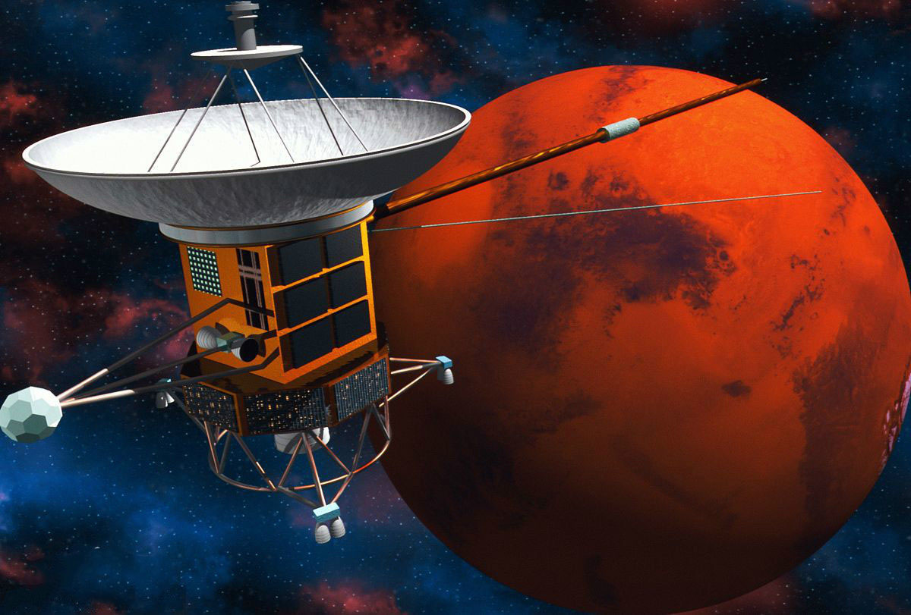
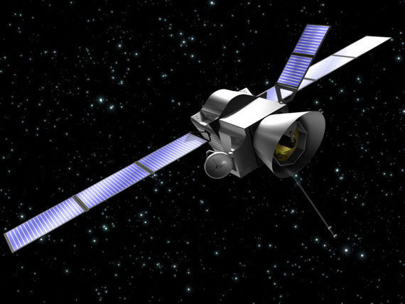

- 你当前所在的页面：首页>返回>发展历程
了解中国航天发展历程
- 信息发布时间:2017-06-17 16:26 网页性质：安全
- 
中国航天事业的发展宗旨是：探索外层空间，扩展对宇宙和地球的认识；和平利用外层空间，促进人类文明和社会发展，造福全人类；满足经济建设、国家安全、科技发展和社会进步等方面日益增长的需要，维护国家利益，增强综合国力。
- 
（1）第一个想到利用火箭飞天的人——明朝的万户
14世纪末期，明朝的士大夫万户把47个自制的火箭绑在椅子上，自己坐在椅子上，双手举着大风筝。他最先开始设想利用火箭的推力，飞上天空，然后利用风筝平稳着陆。不幸火箭爆炸，万户也为此献出了宝贵的生命。但他的行为却鼓舞和震撼了人们的内心。促使人们更努力的去钻研。
（2）东方红一号——中国第一颗人造卫星
1970年中国第一颗人造卫星“东方红1 号”成功升空！成为了中国航天发展史上第二个里程碑。（3） 载人航天
2003 年10 月15 日，中国神舟五号载人飞船升空，表明中国掌握载人航天技术，成为中国航天事业发展史上的第三个里程碑。（4）深空探测-嫦娥奔月
2007年10月24日18时05分，随着嫦娥一号成功奔月，嫦娥工程顺利完成了一期工程。此后，神舟九号与天宫一号相继发射，并成功对接。2016年9月15日22时04分09秒，天宫二号空间实验室在酒泉卫星发射中心发射成功★里程碑之一:
1970年4月24日21时31分，中国“东方红”一号飞向太空。这是中国发射的第一颗人造卫星。★里程碑之二:
1987年8月，中国返回式卫星为法国搭载试验装置。这是中国打入世界航天市场的首次尝试。★里程碑之三:
2003年10月15日，神舟五号载人飞船升空；2005年10月12日，神舟六号搭载费俊龙，聂海胜两名航天员升空。2008年9月25日21点10分04秒988毫秒神舟七号搭载翟志刚，景海鹏，刘伯明三名航天员升空。★里程碑之四:
2007年10月24日18时05分，搭载着中国首颗探月卫星嫦娥一号的长征三号甲运载火箭在西昌卫星发射中心三号塔架点火成功发射★里程碑之五:
2010年10月1日18时59分57秒，嫦娥一号卫星的姐妹星嫦娥二号，在西昌卫星发射中心发射升空，并获得了圆满成功。此次发射目的主要是实现下一步的月球软着陆进行部分关键技术试验，并对嫦娥三号着陆区进行了高精度成像。- 查看更多详情请点击：航天发展史